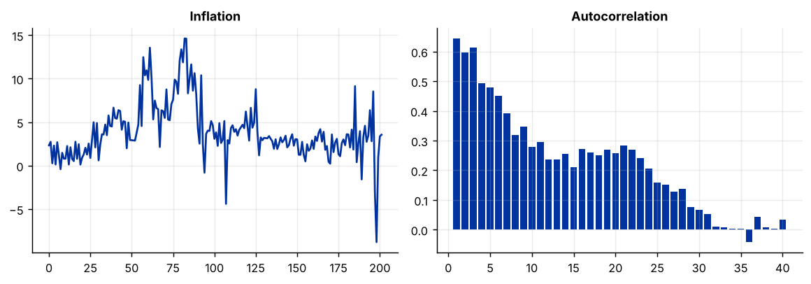

Step 1The question and the model
Is U.S. inflation a stationary series, a unit root, or something in between? A series is fractionally integrated of order \(d\) if \((1-L)^d y_t\) is stationary with short memory. The operator is
with weights that fall slowly (hyperbolically), so the autocorrelations of the series also fall slowly:
| \(d\) | Behaviour |
|---|---|
| \(d = 0\) | short memory: autocorrelations decay geometrically |
| \(0 < d < 0.5\) | stationary, long memory: shocks last, but the series reverts to its mean |
| \(0.5 \le d < 1\) | not stationary, but reverts to its mean: shocks die out, very slowly |
| \(d = 1\) | unit root |
Two semiparametric estimators use only the \(m\) lowest Fourier frequencies, so they do not require a model for the short-run dynamics. The GPH estimator of Geweke and Porter-Hudak regresses the log periodogram on \(-2\ln(2\sin(\lambda_j/2))\); the local Whittle estimator of Robinson maximises an approximate likelihood on the same frequencies. The bandwidth is \(m = n^{\alpha}\), with \(\alpha\) between 0.5 and 0.8.
Before you estimate anything
- Look for breaks first. A shift in the mean or in the variance produces spurious long memory. Test for breaks, and estimate d on the sample that is homogeneous.
- Plot the autocorrelations. Slow, steady decay is the sign.
- Choose the bandwidth in advance. Report a range, since the estimate changes with \(m\).
How to write it: methods sentence
We measure persistence with the fractional order of integration \(d\), estimated by the log-periodogram regression of Geweke and Porter-Hudak (1983) and the local Whittle estimator of Robinson (1995), with bandwidths \(m = n^{\alpha}\) for \(\alpha\) between 0.5 and 0.8.
Step 2Load the data and look at the autocorrelations
import warnings; warnings.filterwarnings("ignore")
import numpy as np, pandas as pd
import matplotlib.pyplot as plt
from scipy import optimize, stats
from statsmodels.tsa.stattools import acf, adfuller, kpss
from statsmodels.stats.diagnostic import acorr_ljungbox
x = pd.read_csv("us_macro.csv")["inflation"].to_numpy(float); n = len(x)
a = acf(x, nlags=40, fft=True)
print(f"{n} quarters; mean {x.mean():.2f}, sd {x.std():.2f}")
print("autocorrelation at lags 1, 4, 8, 12, 20, 40:", [round(float(a[l]), 2) for l in (1, 4, 8, 12, 20, 40)])
print("ADF p-value (level):", round(adfuller(x, regression="c", autolag="BIC")[1], 4), " KPSS statistic:", round(kpss(x, regression="c", nlags=int(4 * (n / 100) ** .25))[0], 3), "(5% critical value 0.463)")
fig, ax = plt.subplots(1, 2, figsize=(9, 3.2)); ax[0].plot(x); ax[0].set_title("Inflation"); ax[1].bar(range(1, 41), a[1:41]); ax[1].set_title("Autocorrelation"); plt.tight_layout(); plt.show()202 quarters; mean 3.98, sd 3.24 autocorrelation at lags 1, 4, 8, 12, 20, 40: [0.64, 0.49, 0.32, 0.24, 0.26, 0.03] ADF p-value (level): 0.0271 KPSS statistic: 0.665 (5% critical value 0.463)

How to read it
The autocorrelations are 0.64 at one quarter, 0.24 at three years (lag 12) and 0.26 at five years (lag 20), and fall to 0.03 only at ten years: large and slowly decaying. The ADF test rejects a unit root (p = 0.027), but the KPSS test rejects stationarity (0.67 against a critical value of 0.46). When the two tests with opposite nulls both reject, a fractional order between 0 and 1 is a natural description.
Step 3Step 1: Estimate d
def periodogram(z):
z = z - z.mean(); I = np.abs(np.fft.fft(z)) ** 2 / (2 * np.pi * len(z)); lam = 2 * np.pi * np.arange(len(z)) / len(z)
h = (len(z) - 1) // 2; return lam[1:h + 1], I[1:h + 1]
def gph(z, m):
lam, I = periodogram(z); lam, I = lam[:m], I[:m]; X = -2 * np.log(2 * np.sin(lam / 2)); Xc = X - X.mean()
return (Xc @ np.log(I)) / (Xc @ Xc), np.sqrt(np.pi ** 2 / 6 / (Xc @ Xc))
def local_whittle(z, m):
lam, I = periodogram(z); lam, I = lam[:m], I[:m]
r = optimize.minimize_scalar(lambda d: np.log(np.mean(lam ** (2 * d) * I)) - 2 * d * np.mean(np.log(lam)), bounds=(-.49, 1.49), method="bounded")
return r.x, 1 / (2 * np.sqrt(m))
rows = []
for alpha in (0.5, 0.6, 0.65, 0.75, 0.8):
m = int(n ** alpha); g, sg = gph(x, m); w, sw = local_whittle(x, m)
rows.append([m, alpha, round(g, 3), round(sg, 3), round(w, 3), round(sw, 3)])
print(pd.DataFrame(rows, columns=["m", "alpha", "GPH d", "s.e.", "Local Whittle d", "s.e."]).to_string(index=False))m alpha GPH d s.e. Local Whittle d s.e. 14 0.50 0.680 0.230 0.623 0.134 24 0.60 0.727 0.162 0.683 0.102 31 0.65 0.758 0.139 0.669 0.090 53 0.75 0.681 0.103 0.584 0.069 69 0.80 0.561 0.090 0.468 0.060
How to read it
The estimates of d are between 0.47 and 0.76 across the bandwidths, so inflation is at the border between stationary and non-stationary long memory. The two estimators agree on the range, and at the central bandwidth (m = 31) they give 0.76 (s.e. 0.14) and 0.67 (s.e. 0.09). The estimates fall as the bandwidth grows, because higher frequencies contain the short-run dynamics, which biases the estimate toward zero. Report the whole range, not the value that suits the argument. All the estimates are significantly above 0. The lowest (0.47, s.e. 0.06) is clearly below 1, while at the central bandwidth the GPH estimate (0.76, s.e. 0.14) is within two standard errors of 1.
Step 4Step 2: Does fractional differencing remove the dependence?
def fracdiff(z, d):
w = [1.0]
for k in range(1, len(z)): w.append(-w[-1] * (d - k + 1) / k)
w = np.array(w); return np.array([w[:t + 1] @ z[t::-1][:t + 1] for t in range(len(z))])
m0 = int(n ** .65); d_hat = local_whittle(x, m0)[0]
z = fracdiff(x - x.mean(), d_hat)[20:] # drop the start-up values
rows = [["inflation", *[round(v, 3) for v in (acorr_ljungbox(x, lags=[20], return_df=True).lb_stat.iloc[0], acorr_ljungbox(x, lags=[20], return_df=True).lb_pvalue.iloc[0])]],
[f"(1 - L)^{d_hat:.2f} inflation", *[round(v, 3) for v in (acorr_ljungbox(z, lags=[20], return_df=True).lb_stat.iloc[0], acorr_ljungbox(z, lags=[20], return_df=True).lb_pvalue.iloc[0])]]]
print(pd.DataFrame(rows, columns=["series", "Ljung-Box (20)", "p-value"]).to_string(index=False))
print("first-order autocorrelation after fractional differencing:", round(acf(z, nlags=1)[1], 3)) series Ljung-Box (20) p-value
inflation 617.679 0.000
(1 - L)^0.67 inflation 43.565 0.002
first-order autocorrelation after fractional differencing: -0.264How to read it
Fractional differencing with d = 0.67 reduces the Ljung-Box statistic from 618 to 44, but the p-value is 0.002, and the first-order autocorrelation changes from 0.64 to −0.26: the filter removes the slow decay but over-corrects the first lag, so some short-run dependence is left. A real model would combine the fractional difference with a short-memory ARMA part (an ARFIMA model), which this semiparametric approach does not estimate.
Step 5Step 3: A check on the estimator with simulated data
rng = np.random.default_rng(5)
rows = []
for d0 in (0.0, 0.3, 0.6):
est = []
for _ in range(40):
s = fracdiff(rng.standard_normal(1000), -d0); est.append(local_whittle(s, int(1000 ** .65))[0])
rows.append([d0, round(np.mean(est), 3), round(np.std(est), 3)])
print(pd.DataFrame(rows, columns=["true d", "mean estimate", "sd of estimates"]).to_string(index=False)) true d mean estimate sd of estimates
0.0 -0.003 0.065
0.3 0.272 0.059
0.6 0.616 0.058How to read it
The estimator recovers the true d on average (the mean estimates are close to 0, 0.3 and 0.6) with a standard deviation of about 0.06 for 1,000 observations. With our 202 observations the uncertainty is larger, which explains why the interval for inflation is wide.
Step 6What to report in the paper
Report d with its standard error for a range of bandwidths, the autocorrelation plot, and the unit-root and stationarity tests. Say that breaks were checked. Interpret d, not only its significance: with d about 0.7, a shock to inflation fades, but over many years.
How to write it: results
Inflation is highly persistent: its first-order autocorrelation is 0.64 and the autocorrelations remain positive for five years. The ADF test rejects a unit root, and the KPSS test rejects stationarity. The local Whittle estimate of the order of fractional integration is 0.67 (standard error 0.09) at bandwidth \(m = n^{0.65}\), and the estimates lie between 0.47 and 0.68 for other bandwidths, so inflation is neither stationary with short memory nor a unit root.
Step 7Common mistakes
Mistakes to avoid
- Mistaking a break for long memory. A change of mean produces a high d.
- A single bandwidth. The estimate depends on \(m\); show a range.
- Estimating d on a series with a trend. Remove it first, or the estimate is biased.
- Using the asymptotic standard error with a small sample. It is approximate.
- Reading d = 0.4 as a unit root. The series reverts to the mean.
- Differencing fully when d is below one. It over-differences the series.
- Applying it to very short series. Under 100 observations the estimates are unreliable.
- Treating the fractional difference as the final model. The short-run dynamics still have to be modelled.